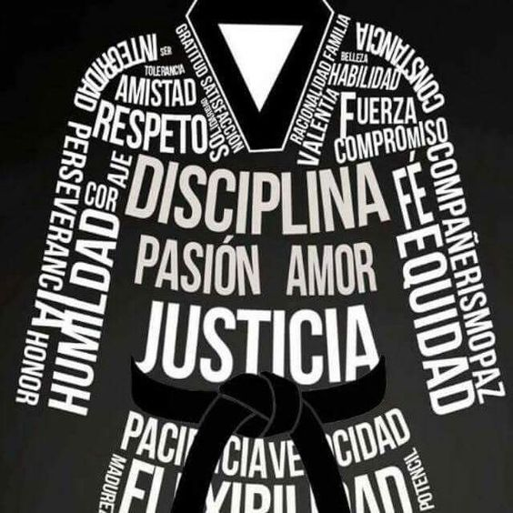
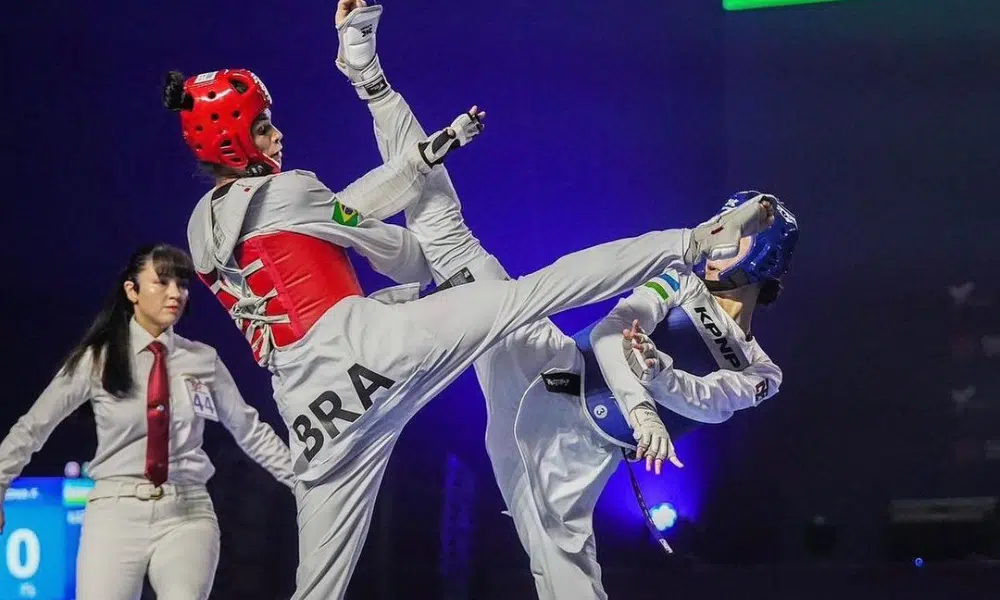
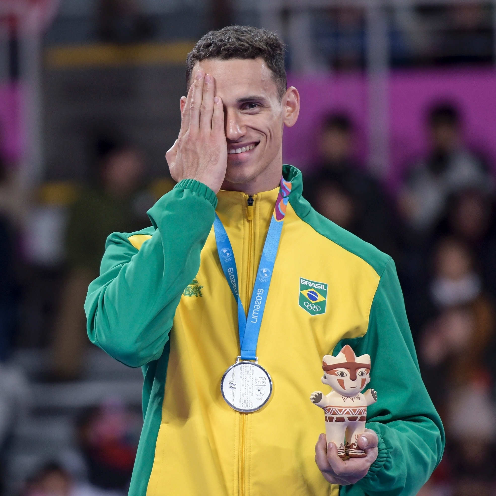
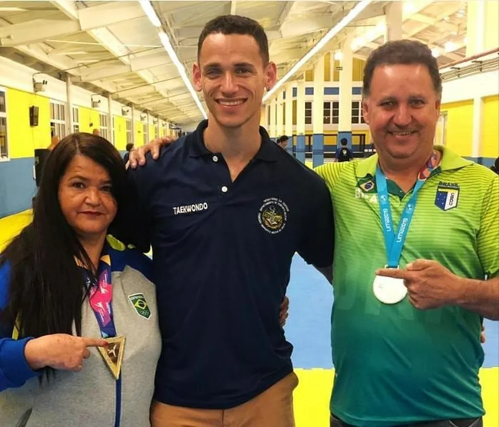

O taekwondo é uma arte marcial de origem coreana que utiliza movimentos de ataque e defesa com os pés e as mãos.
O combate é feito em uma área de 8 m².
Para pessoa vencer a luta tem que ganhar dois rouds seguidos, que tem a duração de 1:30 á 2:00 minutos, caso a pessoa ganha um roud e seu adversário ganha o segundo, terá o terceiro round para a decisão.
O taekwondo é mais que uma luta corporal, ele representa estilos de vida. Essa arte marcial possui princípios, deveres, valores filosofia e uma cultura baseada em respeito, com objetivo de lutar por um lugar melhor para todos.
Ele foi desenvolvido pelo mestre sul-coreano Choi Hong Hi, em 1955. Em coreano, a palavra significa "caminho dos pés e das mãos" através da força da mente e todas as suas atividades estão baseadas em táticas
O Taekwondo só foi trazido ao Brasil nos anos 70, e desde essa época tem se espalhado por outros países, sendo que se tornou um esporte Olímpico em 1988.
Na luta são válidos golpes de braço (socos) no colete e de pernas (chutes) no colete e no capacete. Não é permitido agarrar o adversário.
Além disso, o taekwondo adota 5 princípios que devem ser seguidos pelos seus participantes:
Cortesia: respeito pelos outros, consideração.
Integridade: honestidade, justiça e integridade moral.
Perseverança: compromisso em seguir adiante, mesmo diante das dificuldades.
Auto-controle: autocontrole sobre o corpo e a mente.
Espírito Indomável: nunca desistir diante dos desafios, e sempre lutar com coragem e determinação.


Ícaro Miguel

Vice-campeão mundial de taekwondo e um dos destaques do Brasil nos Jogos Sul-Americanos, Icaro Miguel recorda acidente que o fez perder a visão do olho direito e desabafa sobre preconceito. Brasileiro manteve o título na categoria até 87kg durante o 22º Campeonato Pan-Americano, disputado em Punta Cana, na República Dominicana.
Caso não queira ler a história do acidente escolha outra página!
Faixas e Juramentos🥋
Minha História🥋
História sobre o acidente
"Eu, que não gostava de ser chamado de pirata, comemoro minhas vitórias tapando o olho"
Vice-campeão mundial de taekwondo e um dos destaques do Brasil nos Jogos Sul-Americanos , Icaro Miguel recorda acidente que o fez perder a visão do olho direito e desabafa sobre preconceito.
Eu confesso que a minha lembrança do dia em que perdi a visão do olho direito é vaga. Mas eu lembro do momento do acidente. Era um feriado, uma sexta-feira, por volta das sete da noite. Naquele dia, eu havia passado a tarde toda brincando na piscina com meus amigos em um sítio, em Betim. Fiquei com os olhos muito irritados pela areia, pelo cloro da água. Minha mãe, então, pingou água boricada nos olhos das minhas irmãs, e eu, o caçulinha, fiquei por último. Eu tinha seis anos de idade.
Quando ela pingou uma gota no meu olho esquerdo, eu reclamei que ardeu. E, como já tinha aberto essa água há muito tempo, ela esvaziou o potinho no vaso sanitário e tacou no lixo. Em seguida, pegou um frasco no guarda-roupa e andou na minha direção. O frasco era diferente. Tinha letrinhas vermelhas, enquanto o de água boricada, verde. Na hora eu não atinei, era criança. Deitei na cama e segurei o olho direito assim (abre com a mão) para ela pingar. Comecei a gritar. Era amônia. Foi uma loucura. Ela correu comigo até o chuveiro. Eu gritava e chorava. Foi uma queimação grande, uma dor muito forte. Fomos no pronto-socorro, e os médicos colocaram um tampão. Era o que dava naquele momento. Estava tudo fechado devido ao feriado. Só me consultei com um oftalmologista na segunda-feira.
O médico receitou uma infinidade de remédios e colírios. E eu precisava ir todo dia ao consultório para trocar o curativo. Corri o risco de perder o globo ocular. Minha bochecha ficou ferida por tirar e colocar o esparadrapo toda hora. Esterilizamos o quarto. Havia risco de infecção. Durante três meses, pinguei colírio no olho lesionado de 15 em 15 minutos, incluindo de madrugada. Uso o lubrificante até hoje. Foi uma fase muito difícil. O olho ficou inchado pela secreção, remela, sei lá (risos). O tratamento deu certo. Depois que eu tirei o tampão, recuperei 90% da minha visão. Eu apresentava uma evolução gigante a cada consulta. Os médicos pensavam em um transplante de córnea, e meus pais perguntaram a mim: "Você quer fazer a cirurgia no olho?". Eu era muito novo, não queria. Meu pai pediu a opinião de uma criança de seis anos, é muito louco isso (risos). Eles decidiram que eu não faria por conta disso. O curioso é que, se eu tivesse feito naquele momento, aos seis anos, eu não teria entrado no taekwondo, aos oito, porque eu não faria nenhum esporte de contato. E isso permitiu que me tornasse o atleta que sou hoje. Foi a primeira recusa ao transplante.

Eu nunca culpei a minha mãe pelo acidente. Pelo contrário, eu sempre tentava esconder que isso me incomodava porque imaginava o peso que teria pra ela. Foi um dia muito forte. O médico falou que me colocaria na fila do transplante, que não dava para segurar mais. E eu só pensava: "Minha carreira acabou".